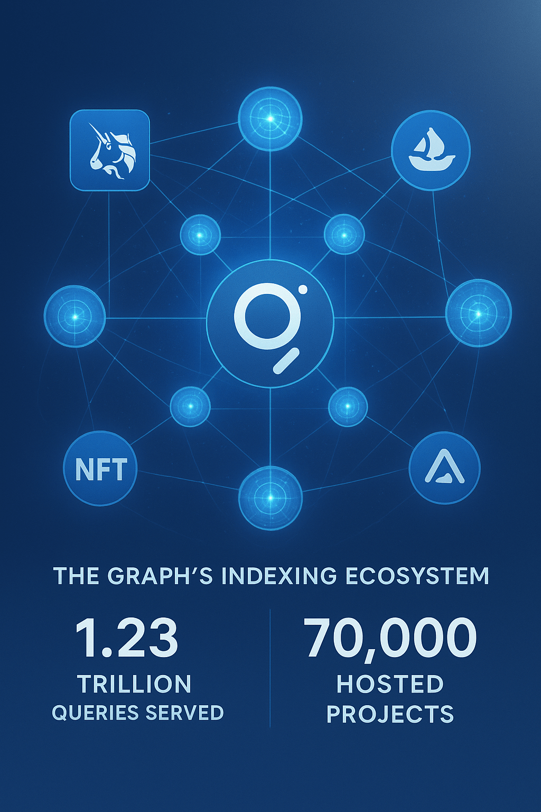

The Graph Price Prediction for End of 2025: In-Depth Analysis and Insights
The information in this article is provided for educational purposes only and is not investment advice. Cryptocurrency investments carry risks.
Introduction
As of August 22, 2025, The Graph (GRT) is trading at approximately $0.087, serving as the native token of The Graph protocol, a decentralized indexing solution for Web3 applications. Launched in 2020, The Graph enables developers to query blockchain data efficiently via subgraphs, supporting platforms like Uniswap, Aave, and OpenSea. With a circulating supply of 9.55 billion GRT and a market cap of $831.02 million (ranked #63), GRT is used for staking, governance, and indexer rewards. This article provides a comprehensive analysis of GRT’s price outlook for the end of 2025, exploring bullish and bearish scenarios, key growth drivers, and potential risks based on current market trends and ecosystem developments.
Current Situation
GRT’s price on August 22, 2025, is $0.087, up 0.92% in the past 24 hours but down 8.42% over the last week, reflecting moderate volatility. The 24-hour trading volume is $29.76 million. Technical indicators show a neutral outlook: the 50-day EMA is rising, suggesting short-term recovery, while the 200-day EMA is flat, indicating longer-term uncertainty. The Fear & Greed Index is at 73 (Greed), with 13/30 (43%) green days and 7.05% volatility over the last 30 days. Recent upgrades, including substreams-powered subgraphs and 1.23 trillion queries served, bolster optimism for The Graph’s role in Web3.

Price Predictions for End of 2025
Analyst forecasts for GRT by December 2025 vary due to market dynamics and adoption trends. Bearish projections, factoring in a potential 30–40% market correction, suggest GRT could dip to $0.074–$0.087, aligning with estimates from CoinPriceForecast and WalletInvestor. Moderate projections, based on steady Web3 adoption, estimate $0.14–$0.20, supported by CryptoNewsZ and Binance. Bullish forecasts, driven by DeFi and NFT growth, predict GRT reaching $0.28–$0.50, with optimistic outlooks like Coinpedia citing $0.50. A consensus leans toward $0.14–$0.20 by year-end, with potential to hit $0.28 in a strong bull market.
Factors Driving Price Growth
- Web3 Adoption: The Graph’s role in indexing DeFi, NFT, and Web3 data drives demand, with 70,000 hosted subgraphs.
- Substreams Upgrade: The August 2025 substreams-powered subgraph upgrade enhances query efficiency, attracting developers.
- Market Rally Potential: A projected crypto market surge in early 2025 (February–April) could lift GRT, especially if Bitcoin sustains above $100,000.
- Ecosystem Growth: Support for major protocols like Uniswap, Aave, and OpenSea strengthens GRT’s utility.
- Community Engagement: Active indexer and curator communities, with $120 million in GRT staked, boost network security.
Risks and Downward Factors
- Market Volatility: A potential 30–40% market correction in early 2025 could depress GRT’s price, as seen in recent 12.5% monthly declines.
- Competition: Other indexing solutions or layer-2 platforms may challenge The Graph’s market share.
- Adoption Risks: Slower Web3 adoption could limit subgraph growth.
- Regulatory Uncertainty: Evolving crypto regulations may impact The Graph’s accessibility or partnerships.
Volatility Analysis
From July to August 2025, GRT’s price dropped from $0.095 to $0.087, an 8.42% decline, with a volatility of 7.05%. The RSI at 51.42 indicates neutral momentum, with support at $0.082 and resistance at $0.095–$0.10. The rising 50-day EMA suggests short-term recovery potential, while the flat 200-day EMA reflects longer-term uncertainty. A falling wedge breakout on the 4-hour chart could push GRT toward $0.12 by September, but failure to break resistance may lead to a drop to $0.074. The Graph’s critical role in Web3 provides a foundation for recovery, though short-term volatility persists.
Conclusion
By the end of 2025, The Graph’s GRT is projected to range between $0.14 and $0.20, with the potential to reach $0.28–$0.50 in a bullish market driven by Web3 adoption, substreams upgrades, and a crypto market rally. However, investors should be cautious of market volatility, competition, and regulatory risks. Thorough research and risk management are essential before investing in GRT. For more details on The Graph’s ecosystem, visit the official The Graph website.